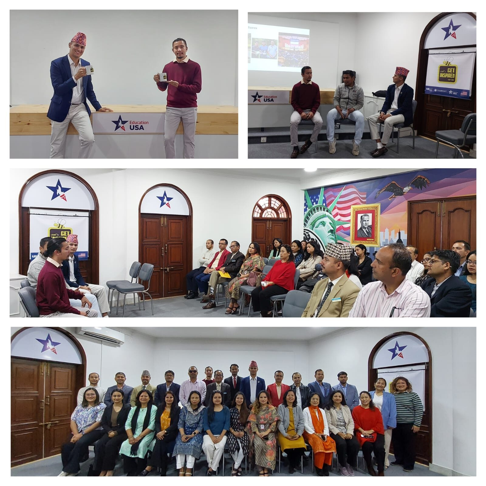
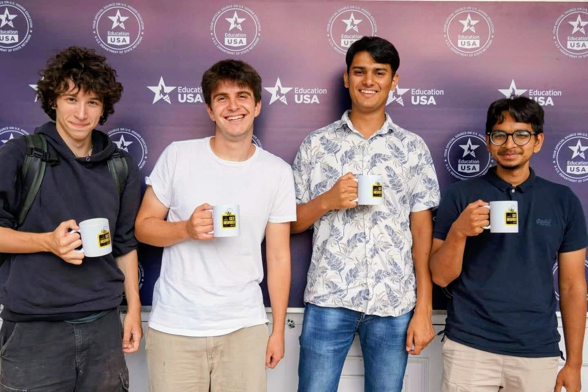

Services
Whether you're a student, an institution, or an organization, here's how I can help, backed by work I've actually done. Every engagement is tailored, so pricing is by quote.
For businesses & entrepreneurs
A UK-registered, remote-first tech company I co-founded, connecting Nepal's deep engineering talent with clients around the world.
8K Tech builds quality software and tech services, delivered affordably, for clients across the US, UK, Germany, the UAE, and beyond. The name honors Nepal's eight peaks above 8,000 meters, including Everest. If you need tech built well, this is the team.
Web and software development, delivered by a remote team of talented Nepali engineers, coordinated to international standards.
US · UK · Germany · UAE, largely through word of mouth.
For students & families
Get into top US and UK universities, guided by someone who did exactly that from Nepal, on a full-ride, Early Decision.
I've been on both sides of the process: as an Opportunity Funds applicant who reached Kenyon and Oxford, and as an EducationUSA session leader (pre-departure orientation, "Get Inspired," and more). I help students find the right-fit schools, build a compelling narrative, and navigate financial aid and scholarships, the piece that too often decides who gets to go.
Includes: school shortlisting & strategy · full-ride and financial-aid positioning · Early Decision strategy · essays and application review · interview preparation · study-abroad transition support.


Ambitious high-school and gap-year students (and their families), in Nepal and worldwide, aiming for competitive US/UK universities, especially those who need strong financial aid.
A full-ride, Early Decision outcome from a roadless village, real EducationUSA advising experience, and a term as a Senior Admission Fellow in Kenyon College's admissions office. I know the path because I walked it, and I've read applications from the other side of the desk.
Universities, student societies, alumni networks, think tanks, and corporates that want a substantive, well-run visit to Nepal, not just tourism.
Founded and led two Oxford Diplomatic Society delegations to Nepal (2025 & 2026) with access to ministries, ambassadors, the UN, and rural communities.
For universities & institutions
Turnkey diplomatic and educational delegations with genuine access, from the halls of government to the villages of the Himalayas.
I design and host end-to-end programs: high-level meetings (foreign ministry, parliamentarians, ambassadors, UN bodies, think tanks), university and cultural engagements, and authentic community visits, all with the logistics, safety, and local partnerships handled.
Includes: itinerary & objectives design · government and institutional access · academic and community partnerships · full logistics, housing, and on-ground support · documentation and follow-up.
For organizations & investors
A trusted partner on the ground to help you understand Nepal, build the right relationships, and design programs that work.
Through the Institute for Rural Development, I've convened dialogues with the Policy Research Institute, government ministries, and the Prime Minister's Office, and delivered community projects with international partners. I help foreign universities, NGOs, donors, and investors enter Nepal with credibility and local insight.
Includes: market-entry & partnership facilitation · stakeholder mapping and introductions · policy research and briefings · program and project design · monitoring and on-ground execution.
Foreign universities, NGOs, donors, investors, and organizations that want to work in or with Nepal and need a credible local bridge.
Real access across government, academia, and community, and a documented record of delivering cross-border projects that hold up.
Meridian Scholars Program, a 10-week global youth leadership residency co-hosted with the Oxford Diplomatic Society, IRD, and Peak Potential, with mentors from Oxford, Caltech, and the Ivy League.
Summer internships in Nepal, the Teach & Travel series that has brought students from Oxford, Kenyon, Dartmouth, Brown, UChicago, and more to teach and build in rural communities.
For young changemakers & schools
Cross-border leadership, learning, and real community impact, rooted in Nepal.
These programs give high-school, gap-year, and undergraduate students the chance to design and deliver meaningful projects, work in international teams, and learn from world-class mentors, turning ideas into action alongside local communities.
Cross-cultural leadership and diplomacy · getting into world-class universities from underserved backgrounds · building youth-led, cross-border initiatives · Nepal's development and potential.
For events, schools & organizations
Talks and workshops drawn from a life spent building bridges across borders.
From EducationUSA sessions to diplomatic roundtables, I speak and run workshops for students, educators, and organizations, blending a personal story of opportunity with practical frameworks for cross-cultural work.
Tell me what you're trying to do, and I'll point you to the right starting place, or tell you honestly if I'm not the right person.